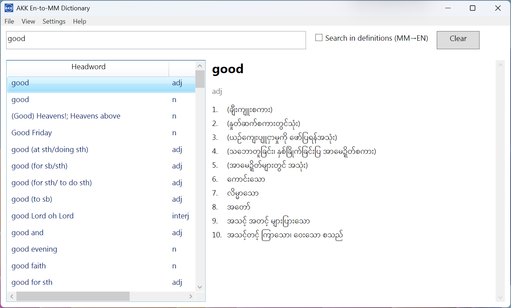

A simple, fast English-to-Myanmar dictionary for Windows. Type a word, get the meaning — offline, no ads, no clutter.

Windows installer (AkkDictionary-1.1.0-Setup.exe) with the full English-Myanmar dataset bundled. Works fully offline.
Signed Chrome/Edge extension (com.aungkokomm.akkenglishmyanmar-Signed.v2.zip) for in-page lookup while you read.
Live filtering as you type. SQLite-backed word index, instant results even on a large dictionary.
Generous typography for the Myanmar script, dark mode friendly, no distractions.